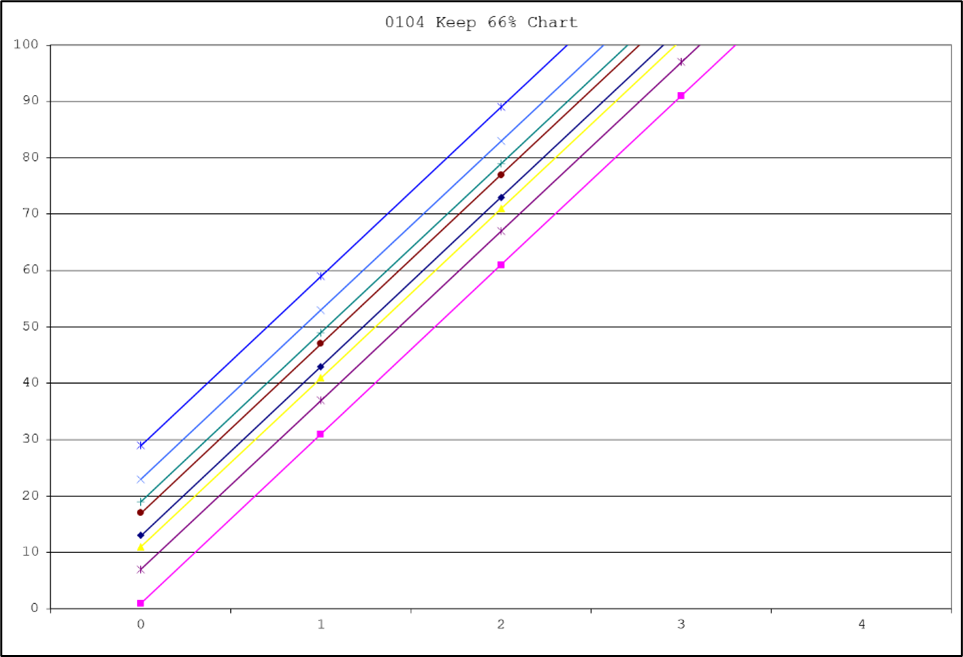
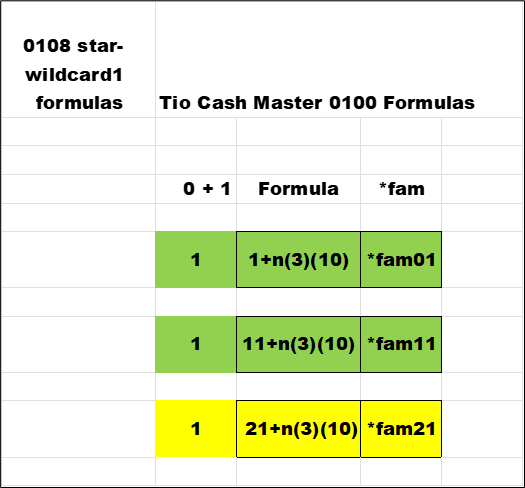

All the data that we are looking for hovers around 0 +/- 1 or 5 +/- 2. This chapter will show the formulas for each *fam. Below is a matrix of *fam there are four columns , one for each group. Within a group are three formulas , each row separated by ten (10). The painted yellow cells are divisible by three. The "n" column is the input to the formula. This list shows all numbers that end as *1 , *3 , *7 , *9.
Below are the *fam that can be divided by three , the other *fam are temporarily out of view. These will be sorted off.
Here are the set of formulas that are sorted in. These will be the focus in the search for primes.
This chart lists the solution to each formula for the value in the "n" column. Note how the value in each formula 's column grows by thirty for the next "n" value.
Here is a partial graph of the eight formulas for "n" from 0 to 3 , off the top edge.
Once again here are all thirty formulas with the green cells highlighting the keepers , or sort in. These thirty formulas will yield all numbers from -∞ (negative infinity) to +∞ (positive infinity). The value of the *fam is the value of the last two digits.
Here is just another view showing the solutions of the *fam formulas satisfying negative and positive values. The smallest number of the matrix in the top left corner , and the largest in the bottom right for each matrix. Then jump to the next matrix: "n + 1" going right. And , "n - 1" going left.
This is a giant view of the matrix for any value high or low.
This is a close-up view of the *1 and its sub-family 's formulas. Green are the keepers , sort in.
Here are the solutions for the formulas associated with *1. The variable "n" is used three times inside a group of thirty numbers. Each solution value grows by ten as "n" is substituted into the formula. All the possible numbers that end in 1 (one) are created by the formulas.
Sorting the solutions by *fam and then by the solution value or "n" ; gives the following results.
The following pages will show the same sorting and information for *3 and *7 and *9.
These last few pages have shown the formulas to calculate numbers that are PS (Prime Suspects) , candidates to be a prime number. Some additional information is gained as the result of the looking for any prime number.
Take any number , look at the last digit using the *wildcard , subtract both *fam associated with the *wildcard , then divide those results by thirty. Look to see if that result can be an integer value by applying the MOD() function with one (1) as the test.
EX:
Pick any number. A big number 1234567
1234567 - 07 (*fam07) = 1234560
1234567 - 17 (*fam17) = 1234550
1234560 / 30 = 41152 (integer)
1234550 / 30 = 41151.666 (non-integer)
Three answers learned:
a)The number belongs to *fam07 (sorted in)
b)The PSL (Prime Suspect Level) = 41152 in the pile
c)*fam17 is disqualified for this PS (sorted out)